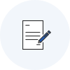
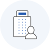
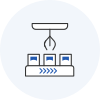

중소기업탄소중립전환지원


중소기업 탄소중립 전환지원을 사업을 추진하고자 하는 기업은 신청하여 주시기 바랍니다
사업신청메뉴얼 다운로드 중소기업 탄소중립 전환지원 사업 시행계획 공고 및 신청서
중소기업 탄소중립 전환지원 실시설계지원 수행사 모집공고
중소기업 탄소중립 전환지원 사업 시행계획 공고 및 신청서
중소기업 탄소중립 전환지원 실시설계지원 수행사 모집공고
 해당 접수는 상황에 따라 조기 마감될 수 있습니다.
해당 접수는 상황에 따라 조기 마감될 수 있습니다.
사업내용
- 『탄소중립 수준진단 → 탄소중립 전략수립 및 최적 온실가스 감축설비 도출(실시·설계지원) → 설비 도입』을 패키지로 지원하여 저탄소 공정전환 선도사례 창출 및 탄소중립 분위기 확산
사업 추진체계
추진절차

- STEP 01
- 사업공고 중기부

- STEP 02
- 신청 ∙ 접수중진공

- STEP 03
- 서면평가중진공

- STEP 04
- 탄소중립수준진단중진공

- STEP 05
- 선정심의중진공
- STEP 06
- 실시설계지원수행사

- STEP 07
- 설비도입지원수행사
- STEP 08
- 성공판정중진공
* 세부추진절차 시행계획 공고 참조
지원규모
지원유형
- 실시설계지원
-
- 국고보조금 : 5백만원이내
- 보조율 : 50% 정률
- 비고 : 총사업비 10백만원 이내
- 설비도입지원
-
- 국고보조금 : 10~300백만원
- 보조율 : 50% 이내
- 비고 : 사업비 총액, 평가결과 등을 고려하여 국고보조금 배분
지원대상
-
저탄소 공정전환이 시급한 자발적 감축 중소기업
- 탄소국경세 도입 검토 국가에 수출하는 기업, 탄소중립을 선언한 대기업 협력사, 탄소多배출업종* 영위기업 등은 우대 지원
* 화학제조업, 비금속제조업, 1차금속제조업, 식료품제조업, 금속가공업 등 (사업공고 붙임2 참조)
- 『중소기업기본법』제2조 제1항 및 동법 시행령 제3조에 따른 중소 제조기업으로 중소기업현황정보 시스템(sminfo.mss.go.kr)에서 확인서 발급 후 제출
지원제외대상
-
금융기관으로부터 불량거래처로 규제중인 기업
* 단, 신용회복위원회의 프리워크아웃, 개인워크아웃 제도에서 채무조정합의서를 체결한 경우, 법원의 개인회생제도에서 변제계획인가를 받거나 파산면책 선고자, 회생인가를 받은 기업, 중진공 등으로부터 재창업자금을 지원받은 기업 등 정부·공공기관으로부터 재기지원 필요성을 인정받은 자(기업)는 참여 가능
- 국세 및 지방세 체납 기업 또는 대표자
- 휴․폐업 기업
- 불건전 영상게임기 제조업, 도박게임장비 등 불건전 오락용품 제조업
- 중소기업 탄소중립 전환지원 실시설계지원 수행사, 설비도입지원 수행사로 참여하고 있는 기업 또는 그 특수관계 기업
- 대표자 또는 기업이 보조금법 위반 등으로 정부 지원사업에 참여제한 중인 경우
- 대표자 또는 기업이 그 밖에 사회적 물의를 일으켜 지원이 합당하지 않다고 인정되는 경우
지원내용
-
『탄소중립 수준진단 → 탄소중립 전략수립 및 최적 온실가스 감축설비 도출(실시·설계지원) → 설비 도입』을 패키지로 지원
- (수준진단) 온실가스 배출현황 진단 및 감축수단 발굴을 토대로 잠재감축량이 큰 중소기업 중심으로 선정·지원
- (실시·설계 지원) 탄소중립 전략수립 및 최적 온실가스 감축설비 도출을 위한 기술·경영 컨설팅, 공정분석, 시장조사 등 지원
- (설비도입 지원) 온실가스 감축설비* 구입비, 공사비, 시운전비 및 추가 컨설팅 등을 지원
* 차압터빈 시스템, 연료전환, 폐기물전처리장치, 인버터, 고효율기기, 탄소무배출설비, 폐열회수 이용설비, 폐기물 열분해시설, 탄소포집기술 적용 설비 등 (사업공고 붙임1 참조)
** 사업공고 붙임1의 지원설비에 포함되지 않으나, 탄소저감 효과성이 인정되는 설비는 운영위원회 심의를 통해 지원 가능
| 지원단계 | 지원 프로그램 | 지원내용 | |
|---|---|---|---|
| 대분류 | 분류 | ||
| 수준진단 |
|
||
| 실시설계 | 실시지원 | 기술컨설팅 |
|
| 경영컨설팅 |
|
||
| 배출권거래 |
|
||
| 설계지원 | 공정분석 |
|
|
| 시장조사 |
|
||
| 벤치마킹 |
|
||
| 설비도입 지원 |
|
||
신청방법
- 신청 기간 : 2022. 06. 16.(목) ~ 2022. 06. 30.(목) 18:00
-
제출 서류 : [사업공고 붙임3] 사업신청서(계획서) 및 첨부서류 등
* 사업신청서 및 첨부서류의 양식은 사업공고 붙임3 참고
-
신청 방법
- (온라인 신청) 국고보조금통합관리시스템 e나라도움을 통해 신청
* 본 지원사업의 신청업체는 e나라도움(www.gosims.go.kr) 회원가입 필수
※ e나라도움 온라인 사업신청 절차
① e나라도움 로그인 → ② 사업수행관리 → ③ 신청관리 → ④ 사업신청관리 → ⑤ 공모현황 → ⑥ 공모명 : ‘2022년 중소기업 탄소중립 전환지원 사업’선택 후 ‘신청서 작성’을 클릭하여 사업신청서 작성 및 첨부파일 등록 후 제출 (신청마감일 18시까지 인정)
* e나라도움 사용자 지원센터 : 1670-9595, 02-6676-5100
문의처
- 중소벤처기업진흥공단 ESG진단기술처(055-751-9525, 9854)